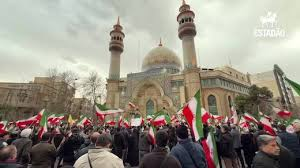

A União Europeia poderia justificar um conflito com o Irã alegando preocupações com a segurança internacional e a estabilidade no Oriente Médio. Um dos principais motivos seria o programa nuclear iraniano, que alguns países europeus afirmam poder ser utilizado para desenvolver armas nucleares. A UE poderia argumentar que isso representa uma ameaça à paz global e viola acordos internacionais de não proliferação nuclear. Outro ponto seria o apoio que o Irã supostamente oferece a grupos armados em diferentes regiões do Oriente Médio. Na visão de governos europeus, esse apoio poderia contribuir para conflitos regionais e aumentar a instabilidade política em países vizinhos. Assim, a União Europeia poderia defender que uma ação seria necessária para conter essa influência. Também poderia ser citado o risco para rotas comerciais e para o fornecimento de energia. O Oriente Médio é uma região estratégica para o transporte de petróleo e gás, e qualquer tensão envolvendo o Irã pode afetar a economia mundial. A UE poderia afirmar que precisa garantir a segurança dessas rotas para proteger seus interesses econômicos. Questões relacionadas a direitos humanos dentro do Irã também poderiam ser usadas como argumento político e diplomático. Líderes europeus frequentemente criticam violações de direitos humanos e poderiam usar esse ponto para pressionar o governo iraniano. Além disso, a União Europeia poderia justificar suas ações como parte de uma coalizão internacional, trabalhando junto com aliados para tentar impedir ameaças consideradas perigosas para a ordem global. Nesse contexto, o conflito seria apresentado como uma tentativa de proteger a segurança internacional e restaurar a estabilidade na região.
